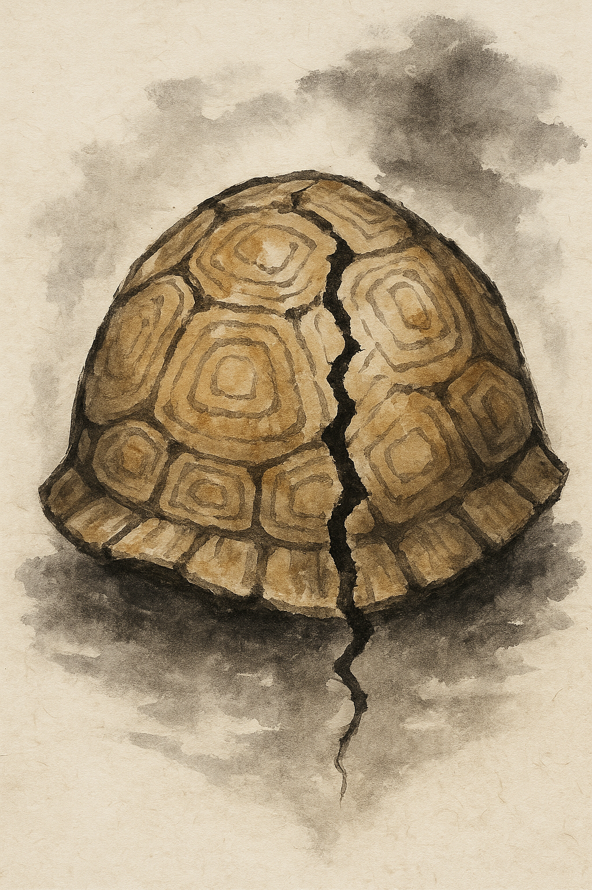
A crack spreads through the turtle shell — a sign of something to come.
(pictorial — crack)
On: チョウ ・ Kun: きざ-し
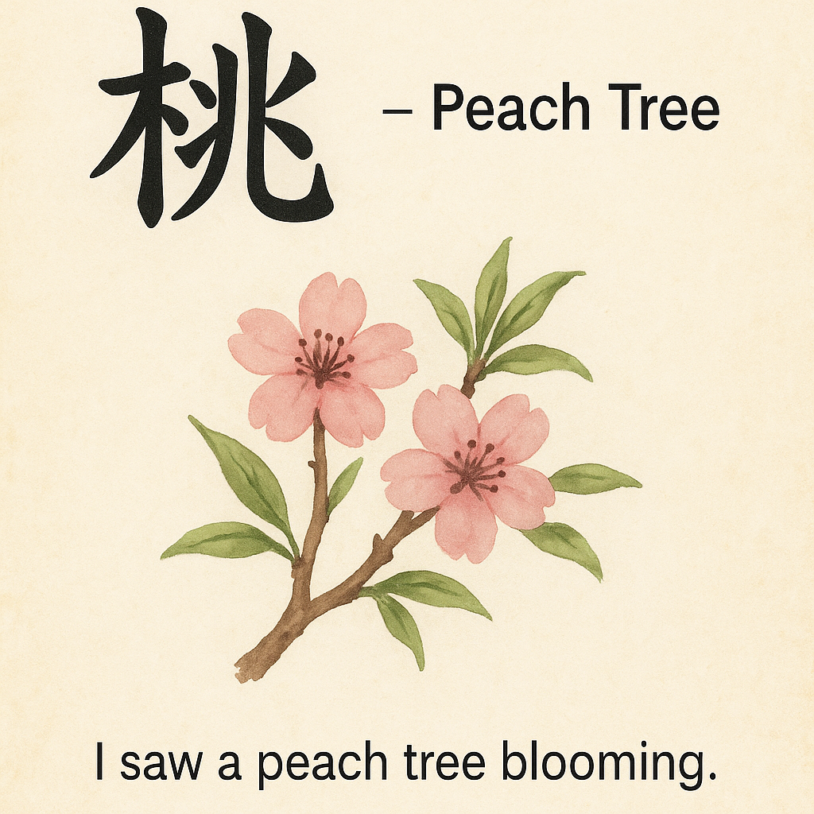
The tree blossoms gently; pink petals fall like soft whispers of spring.
木 + 兆
On: トウ ・ Kun: もも
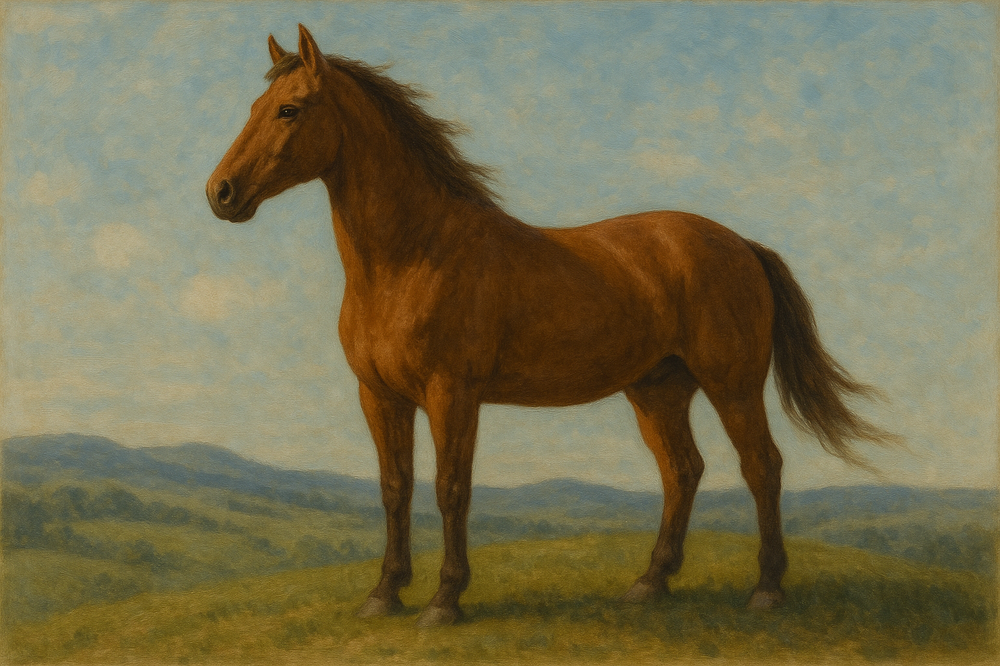
With steady eyes, he gazes into the distance, waiting for a sign.
目 + 兆
On: チョウ ・ Kun: なが-める
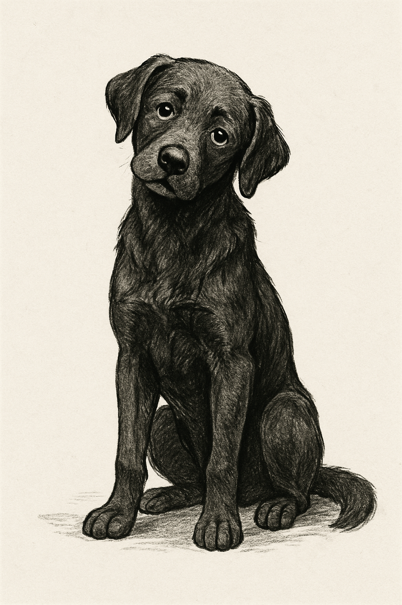
The little dog wags its tail, loyal and always watching its master.
(pictorial)
On: ケン ・ Kun: いぬ
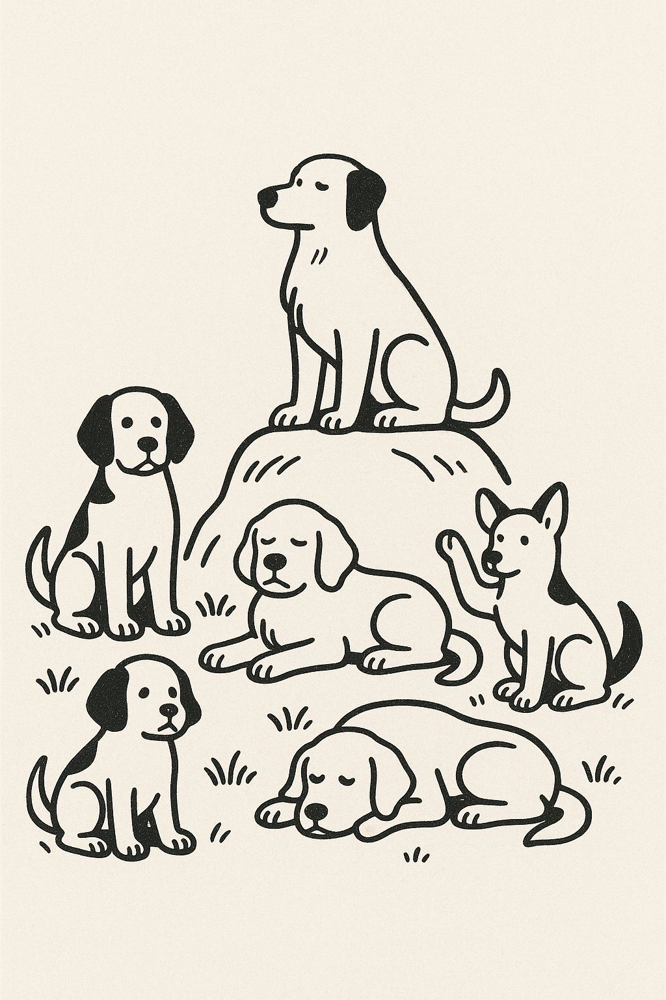
The shape remains steady — unchanging, like a still lake on a windless morning.
⺦+ 犬
On: ジョウ
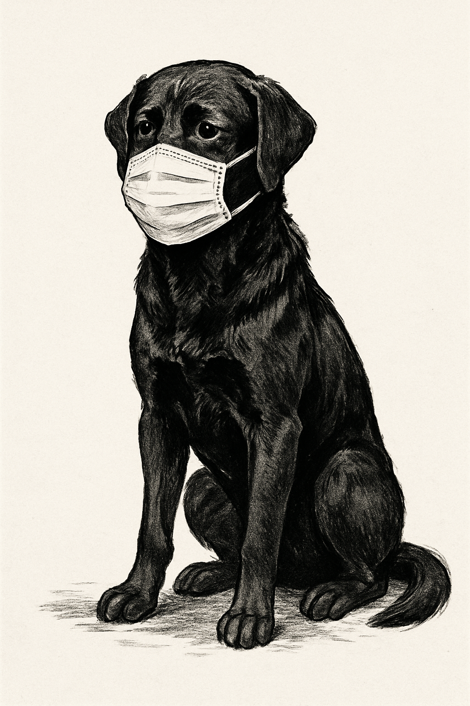
In the black forest, only the sound of your breath remains — deep, unbroken silence.
黒 + 犬
On: モク ・ Kun: だま-る
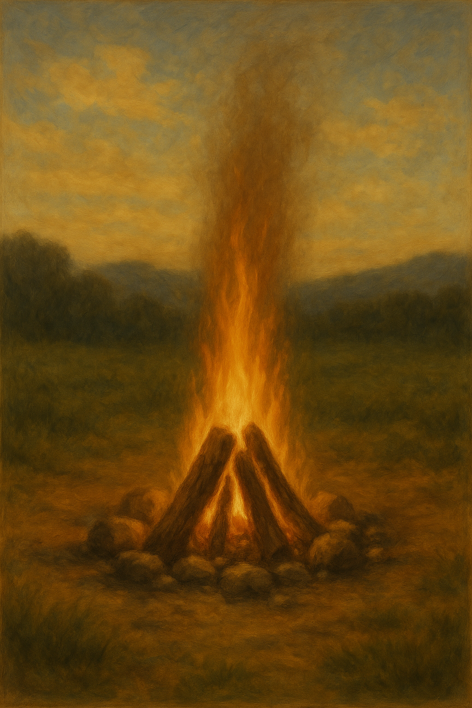
The flames flicker — this or that, changing yet remaining the same at heart.
灬 + 月 + 犬
On: ゼン ・ Kun: しか・しか-り
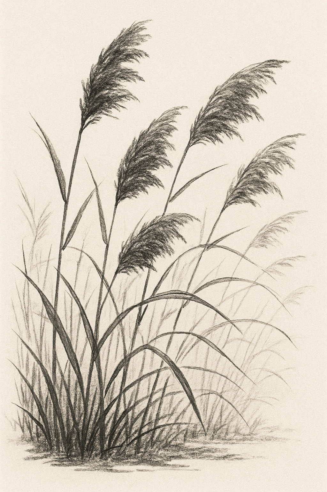
The tall grasses sway gently by the riverbank, bending with each passing breeze.
⺾ + 敕 (phonetic)
On: テキ ・ Kun: おぎ
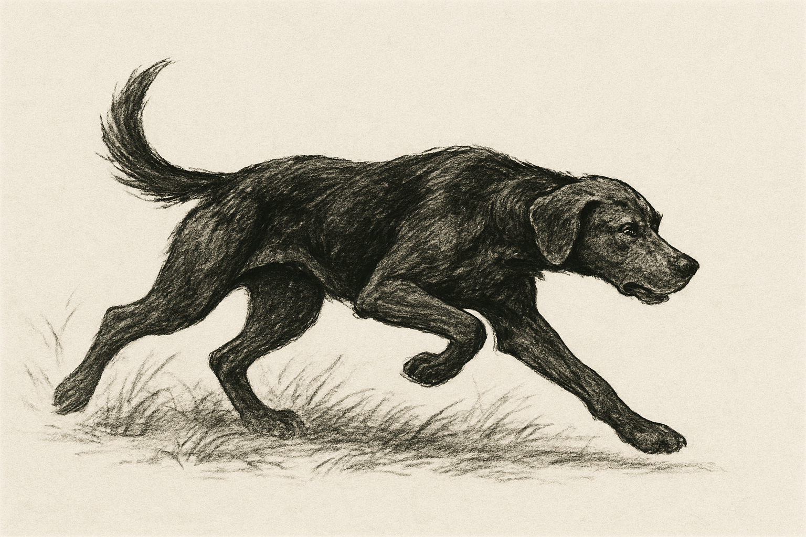
The hunter moves silently through the forest, eyes sharp, tracking his prey beneath the trees.
犭 + 守
On: シュ ・ Kun: か-る、か-り
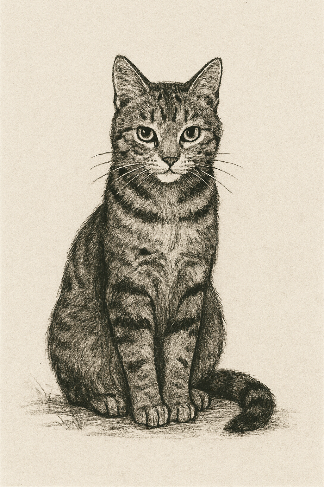
The cat crouches quietly, watching everything — patient, elegant, and ready to pounce.
犭 + 苗
On: ビョウ ・ Kun: ねこ
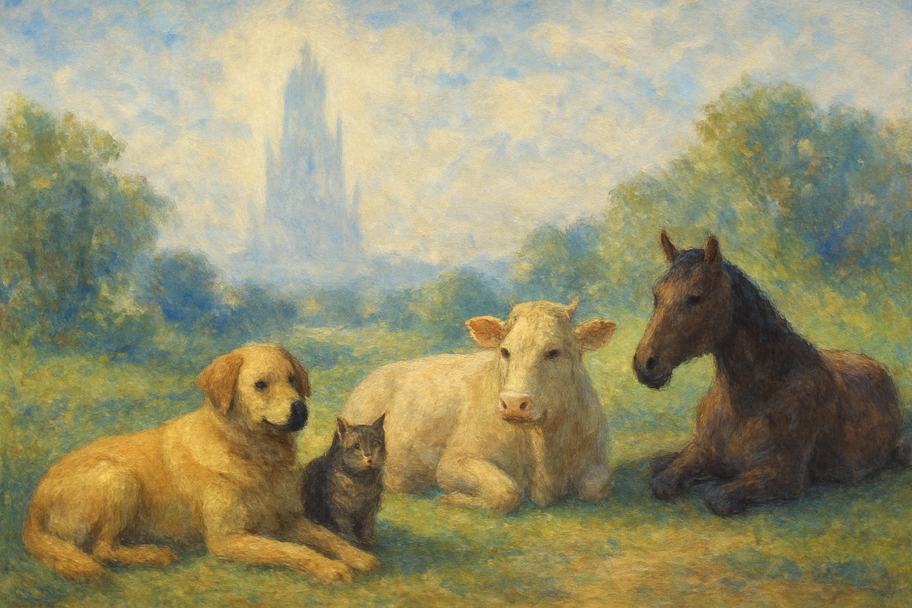
The cow lays peacefully in the field, chewing slowly beneath the wide sky.
(pictorial)
On: ギュウ ・ Kun: うし
Among many cattle, one shines brighter — chosen for something special and unique.
牛 + 寺
On: トク
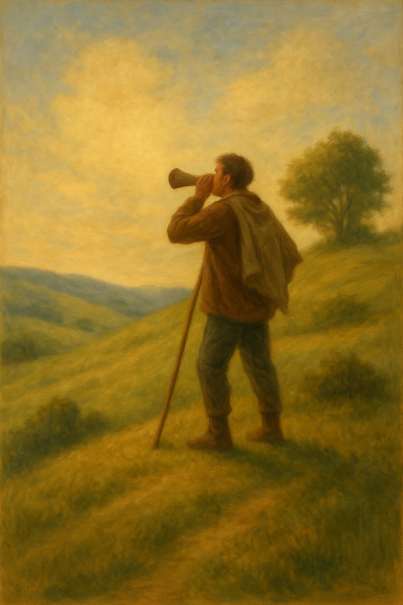
The mouth opens to declare the truth — a message revealed to all who listen.
牛 + 口
On: コク ・ Kun: つ-げる
The footsteps move forward — those who go ahead, leading the way before others follow.
⺧ + 儿
On: セン ・ Kun: さき
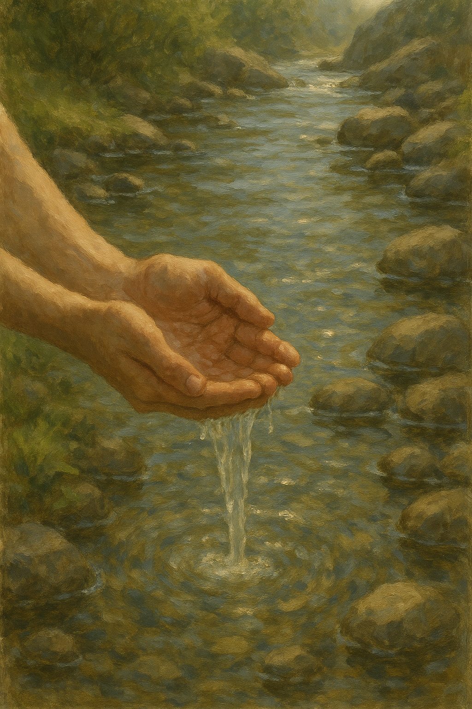
The water flows over the hands, washing away dirt and making everything clean again.
氵 + 先
On: セン ・ Kun: あら-う